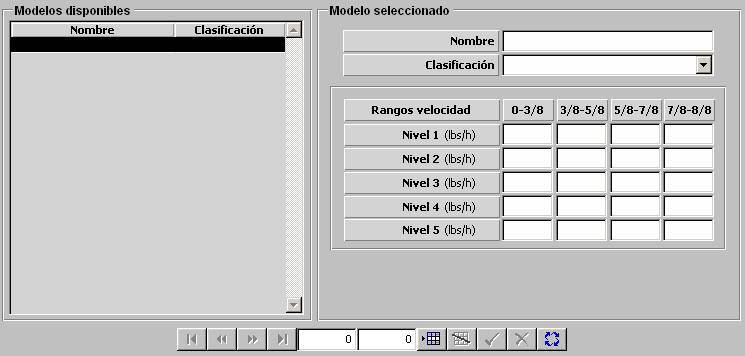

Consumo de Combustible de Aéreas según Altura

Los modelos de Consumo de Combustible de unidades Aéreas según Altura se parametrizan mediante una tabla en la que se introducen los valores de Consumo de Combustible para los siguientes rangos de velocidad de la unidad, expresados en fracciones de la velocidad máxima de la unidad:
0 – 3/8, 3/8 – 5/8, 5/8 – 7/8, 7/8 – 1
Se consideran distintos consumos en función de la altura de vuelo de la unidad.
Los valores de consumo que aplica el modelo son distintos en función de la altura de vuelo de la unidad, considerándose los siguientes niveles:
Nivel 1: de 0 a 500 pies
Nivel 2: de 500 a 2000 pies
Nivel 3: de 2000 a 10000 pies
Nivel 4: de 10000 a 25000 pies
Nivel 5: de 25000 a 100000 pies
Los límites de estos niveles son configurables en Galeon.ini.
Los consumos introducidos en esta tabla se ven afectados por la carga de la unidad (ver Consumo de Combustible de unidades Aéreas según Carga).
Descripción de los parámetros:
Consumo: Cantidad de combustible consumido por la unidad cada hora, según el rango de altura de vuelo de la unidad y el rango de velocidad en cada momento.
Unidades: libras / hora
Rango: 0 - 99999
Ejemplo:
Si Consumo = 0 ⇒ no consume combustible.
Si Consumo = 99999 ⇒ consumo máximo.